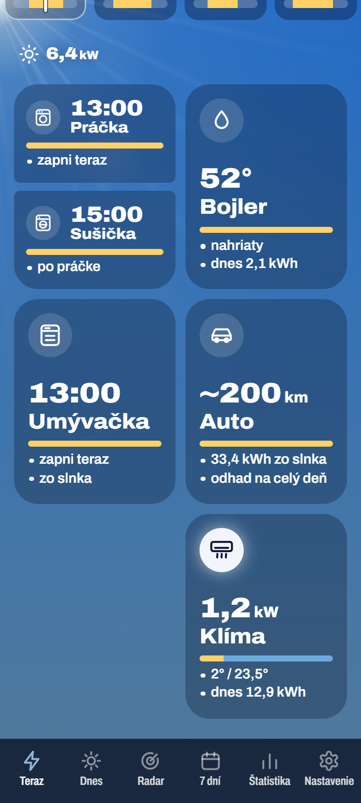
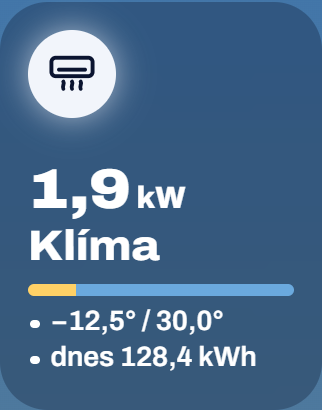
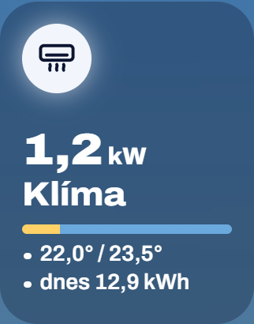
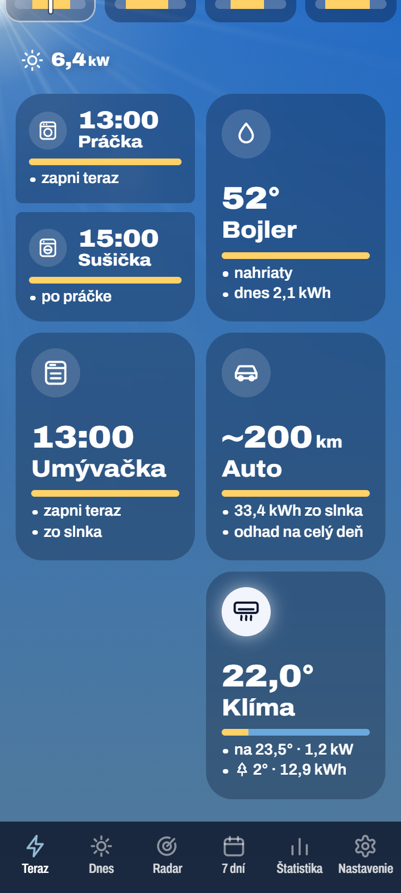
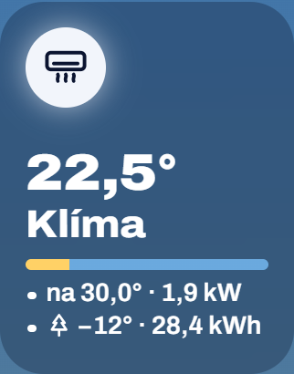
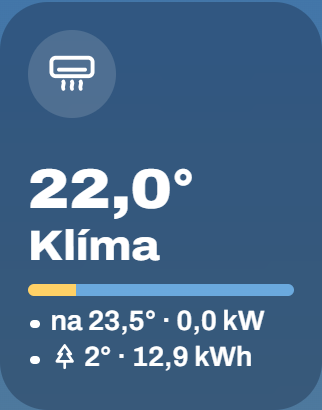
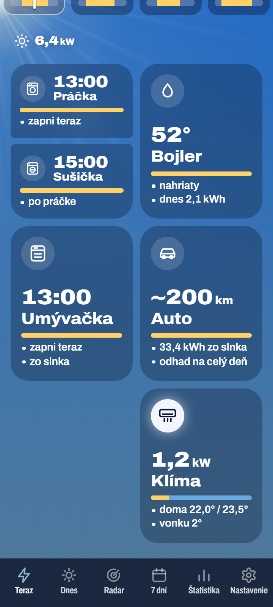
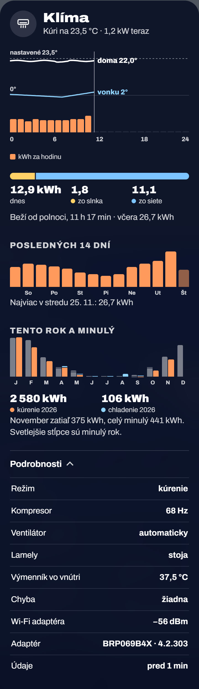

Návrh · 26. 11. 2026
Klimatizácia na karte Teraz
Daikin Sensira (FTXF50D + RXF50D) s adaptérom BRP069B4X má v domácej sieti lokálne HTTP API bez hesla
(10.10.10.148, firmvér 4.2.303). Zvolená cesta A: údaje číta skript na Shelly 1 Gen3 s teplomerom a
posiela ich Workerovi. Zatiaľ len sledovanie, riadenie je v docs/to do later.md.
Čo klimatizácia povie
Prečítané z adaptéra 26. 11. 2026 o 11:17, len čítanie, nič sa nenastavovalo.
| Údaj | Hodnota | Odkiaľ |
|---|---|---|
| Zapnutá, režim, nastavená teplota | áno, kúrenie, 23,5 °C | aircon/get_control_info |
| Teplota doma / vonku | 22,0 °C / 2,0 °C | aircon/get_sensor_info |
| Kompresor | 68 Hz | cmpfreq |
| Príkon teraz | 12 → 1,2 kW (jednotka 100 W odvodená, viď riziká) | mompow |
| Energia po hodinách (dnes, včera) | 1,0 – 1,5 kWh za hodinu, kúrenie a chladenie zvlášť | aircon/get_day_power_ex |
| 14 dní, mesiac, rok a minulý rok | dnes 12,9 kWh, včera 26,7, január 851 kWh, rok 2026 2 580 kWh kúrenia | get_week_power_ex, get_month_power_ex, get_year_power_ex |
| Ako dlho dnes beží | 677 min | get_week_power |
| Ventilátor, lamely, chyba, Wi-Fi | automaticky, stoja, žiadna, −56 dBm | get_control_info, basic_info |
| Výmenník vo vnútri (asi) | 37,5 °C | get_monitordata (hetmp, význam odhadnutý) |
| Vlhkosť | Sensira ju nemeria | hhum=- |
Cesta údajov (A)
10.10.10.148← HTTP.GET Shelly 1 Gen3 (skript)→ POST /klima s pečaťou
Worker → objekt UcetHuawei (kl:)→
appka (s obnovou dát)
- Skript poskladá appka v Nastavení z adresy klimatizácie a pečate, rovnako ako skript bojlera. Človek ho vloží do Shelly 1 Gen3 (Skripty → Nový). Skript zásuvky bojlera ostane bajtovo rovnaký.
-
Každú minútu stav a teploty (
get_sensor_info+get_control_info), každých 15 minút hodiny a 14 dní, raz za hodinu mesiace a rok. Ukladajú sa len čísla, ktoré appka ukáže. - Worker drží posledný stav a bod každých 5 minút za 7 dní (teplota doma a vonku, príkon) pre graf dňa, ako teplotu vody bojlera. Energiu po hodinách neráta, berie ju hotovú z klimatizácie.
- Bezplatné limity: +1 440 požiadaviek na Workera a objekt za deň (zásuvka bojlera má toľko isto), limit je 100 000. Výpočet nie je žiadny, 10 ms procesora stačí.
- Keď skript 5 minút nič nepošle, dlaždica povie „bez spojenia“ (jantárový rám ako zásuvka bez spojenia).
Dlaždica – zvolené B (26. 11. 2026)
Príkon veľkým číslom, prvý riadok len hodnoty vonku / nastavená, druhý riadok dnešné kWh ako pri bojleri. Teplota doma je v paneli (graf a nadpis).

B„2° / 23,5°“ a „dnes 12,9 kWh“


Vľavo najhoršie hodnoty (−12,5° / 30,0°, dnes 128,4 kWh): 103 zo 133 px, nič nepretečie. Vpravo pre porovnanie doma / nastavená (22,0° / 23,5°), keby si tým „vonku“ myslel teplotu v izbe.
Dlaždica – pôvodné varianty
Pravý stĺpec pod autom: bojler, auto a klimatizácia sú vpravo zariadenia so stavom, vľavo to, čo sa plánuje. Pri 360 px má dlaždica na odrážku 133 px, teda asi 17 znakov. Päť údajov sa so slovami nezmestí, pri −12 °C by „vonku“ pretieklo. Preto dva varianty:

ATeplota doma veľkým číslom
22,0° doma, odrážky „na 23,5° · 1,2 kW“ a „[jedlička] 2° · 12,9 kWh“. Vonku povie malá ikona jedličky (čítačka „vonku“), všetkých päť údajov je na dlaždici.


Vľavo najhoršie hodnoty (na 30,0°, 1,9 kW, −12°, 28,4 kWh): 118 zo 133 px, nič nepretečie. Vpravo kompresor stojí, bez bieleho kruhu.
+ všetko, čo si chcel · − nová ikonka v texte odrážky

BPríkon veľkým číslom
1,2 kW, odrážky „doma 22,0° / 23,5°“ a „vonku 2°“. Len slová, ako na ostatných dlaždiciach.
+ príkon je hneď vidieť, vedľa „52°“ bojlera a „~200 km“ auta · − dnešné kWh sa nezmestia, sú až v paneli
Pre oba varianty
- Meno „Klíma“. „Klimatizácia“ sa pri 360 px zalomí na dva riadky.
- Pásik (P1): koľko z dnešnej energie klimatizácie bolo zo slnka (zlatá) a zo siete (modrá). Hodinu po hodine z kWh klimatizácie a z hodinových súhrnov výroby a domu, ktoré Worker už zbiera. P0: pásik prázdny.
- Biely kruh (Z1): kým kompresor beží, ako zapnutý spotrebič. V zime bude biely skoro stále. Z2: klimatizácia biely kruh nemá nikdy.
- Ťuknutie otvorí panel Klíma (krok
tzVec'klima' ako bojler a auto).
Panel Klíma

- Nadpis: čo robí a príkon teraz („Kúri na 23,5 °C · 1,2 kW teraz“).
- Graf dňa 0 – 24 h: teplota doma (biela), vonku (modrá), nastavená (čiarkovaná) a pod nimi stĺpce kWh za každú hodinu (kúrenie oranžové, chladenie svetlomodré), čiarka teraz.
- Energia dneška slnko / sieť ako v paneli Bojler dnes, ako dlho dnes beží a včerajšok.
- Posledných 14 dní stĺpcami, dnešok svetlejší (ešte nie je celý).
- Tento rok a minulý po mesiacoch, súčet kúrenia a chladenia za rok.
- Podrobnosti zbalené: režim, kompresor, ventilátor, lamely, výmenník, chyba, Wi-Fi, adaptér a firmvér, vek údajov.
Vymyslené v náhľade: krivky teplôt do 11:17 (Worker ich zatiaľ nezbiera, hodnoty teraz sú skutočné), rozdelenie slnko 1,8 / sieť 11,1 kWh a obsah dlaždice bojlera. Ostatné dlaždice sú z testovacích fixtures. Hodinové kWh, 14 dní, mesiace, rok a podrobnosti sú skutočné.
Hodinu zapíše klimatizácia až po jej skončení (o 11:17 bola hodina 11 ešte prázdna), preto stĺpec bežiacej hodiny chýba.
Riziká
- Firmvér cez Onecta. Daikin pri novších adaptéroch (BRP069C4x) lokálne API firmvérom zrušil. Či Onecta adaptéru BRP069B4X aktualizácie posiela, som neoveril. Keby appka Onecta ponúkla aktualizáciu adaptéra, radšej ju nepotvrdzuj. Keby API zmizlo, ostáva cloud Onecta (200 volaní za deň) alebo ESP32 Faikin.
-
Jednotka príkonu (
mompow× 100 W) je odvodená z toho, že sedí s hodinovými kWh. Pred nakódovaním ju overím súčtom minútových hodnôt za hodinu protiget_day_power_ex. - Súbeh s appkou Onecta: dotaz každú minútu robí Home Assistant bežne, na tvojom adaptéri to ešte nebeží dlhšie. Overím pár dní, či Onecta neprestane odpovedať.
- Odhad nabíjania auta (dom bez bojlera ≥ 4,1 kW) dnes klimatizáciu nevidí: pri plnom kúrení s varením môže ohlásiť nabíjanie, ktoré nie je. S meraním klimatizácie ju Worker vie od domu odčítať (S1) - to už nie je len sledovanie, preto sa pýtam.
Rozhodnuté 26. 11. 2026
- Cesta A: skript na Shelly 1 Gen3 s teplomerom.
- Dlaždica B: príkon veľkým číslom, prvý riadok „vonku / nastavená“ len hodnotami, druhý „dnes … kWh“.
- Pásik ako pri ostatných spotrebičoch: slnko, lacná sieť a drahé pásmo (drahé len pri tarife s drahým pásmom). Energia dneška v paneli je v tých istých troch farbách.
- Z1: biely kruh, kým beží kompresor.
- Panel takto.
- S1 neskôr: odčítanie klimatizácie z odhadu nabíjania auta je v
docs/to do later.md.